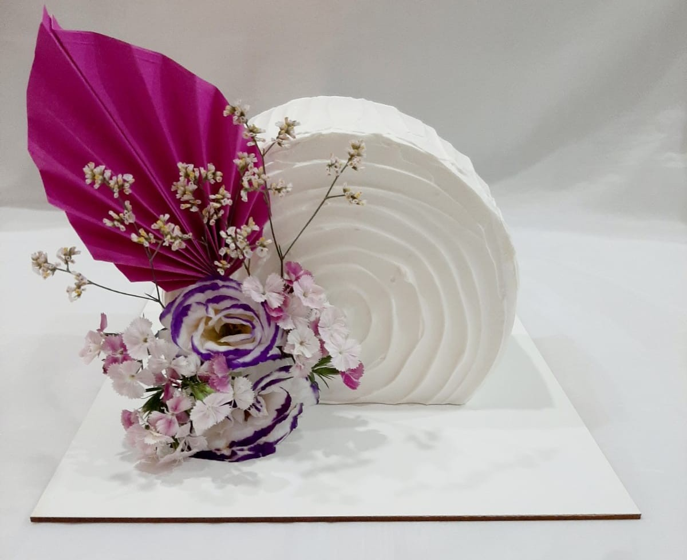
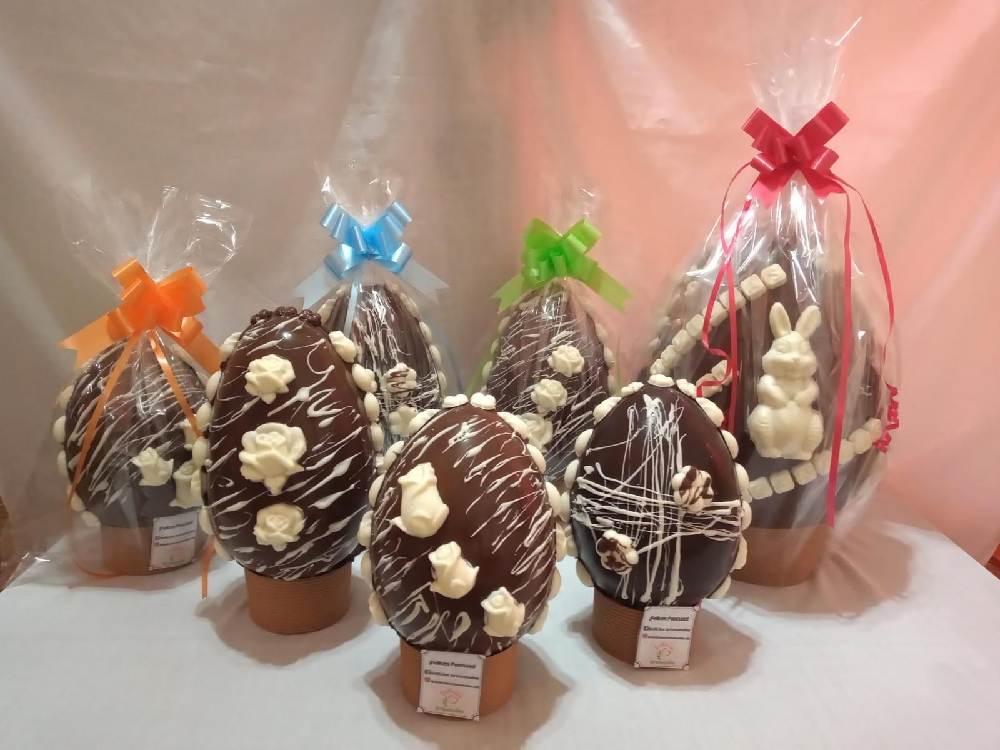
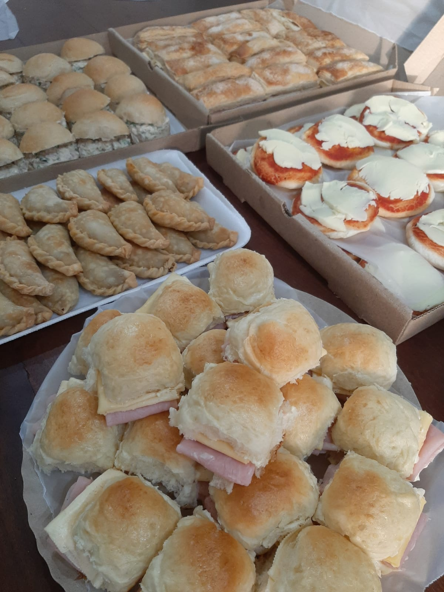
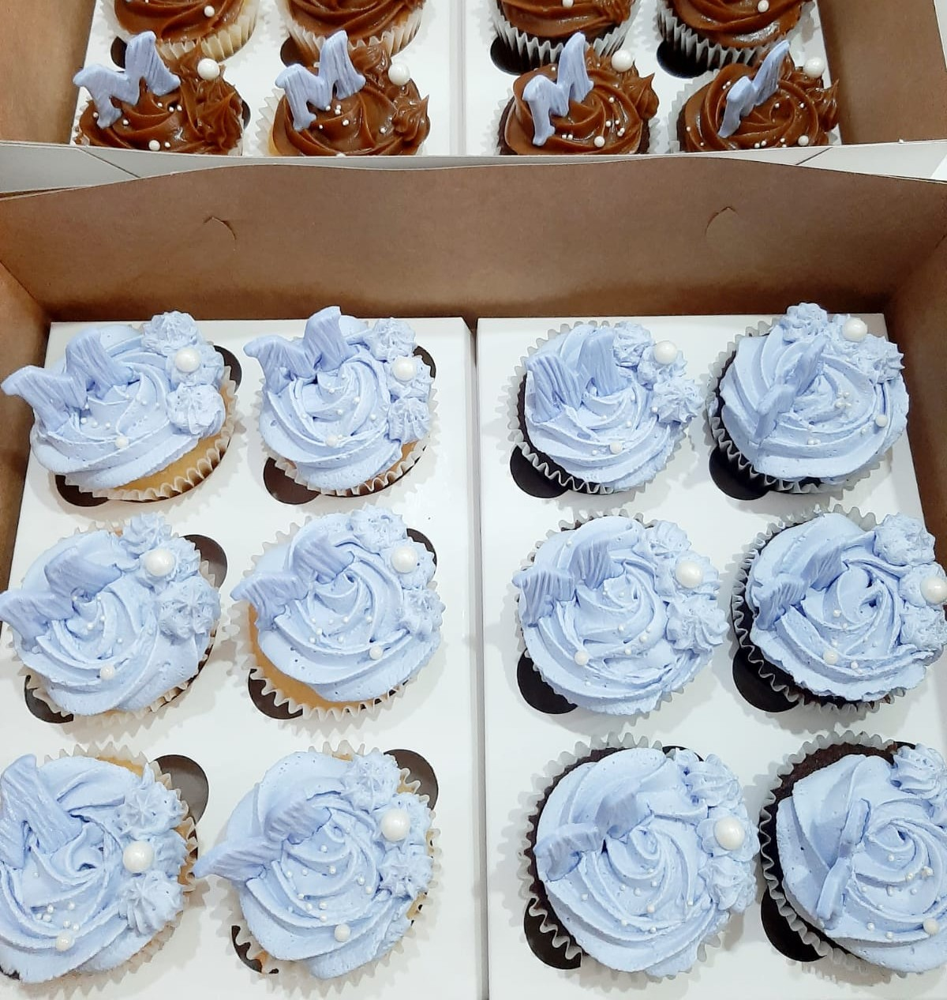
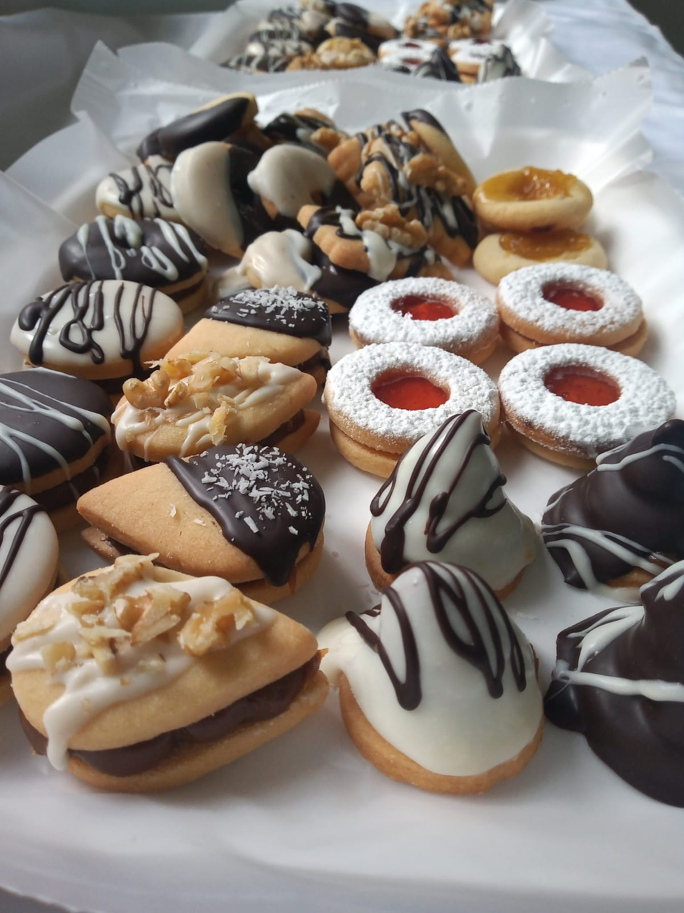
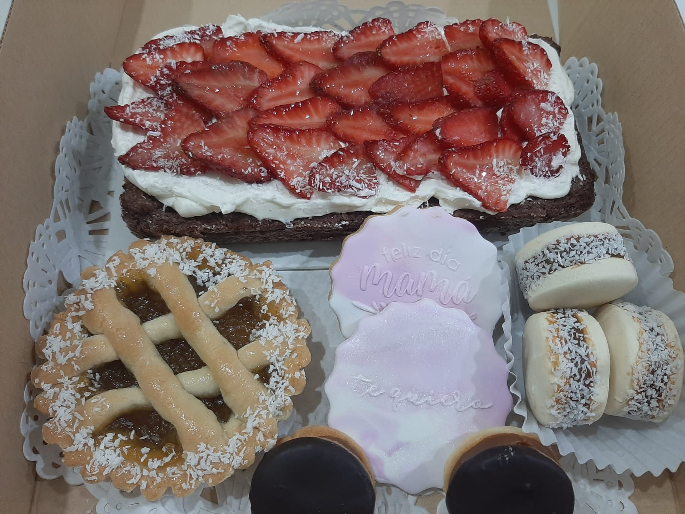
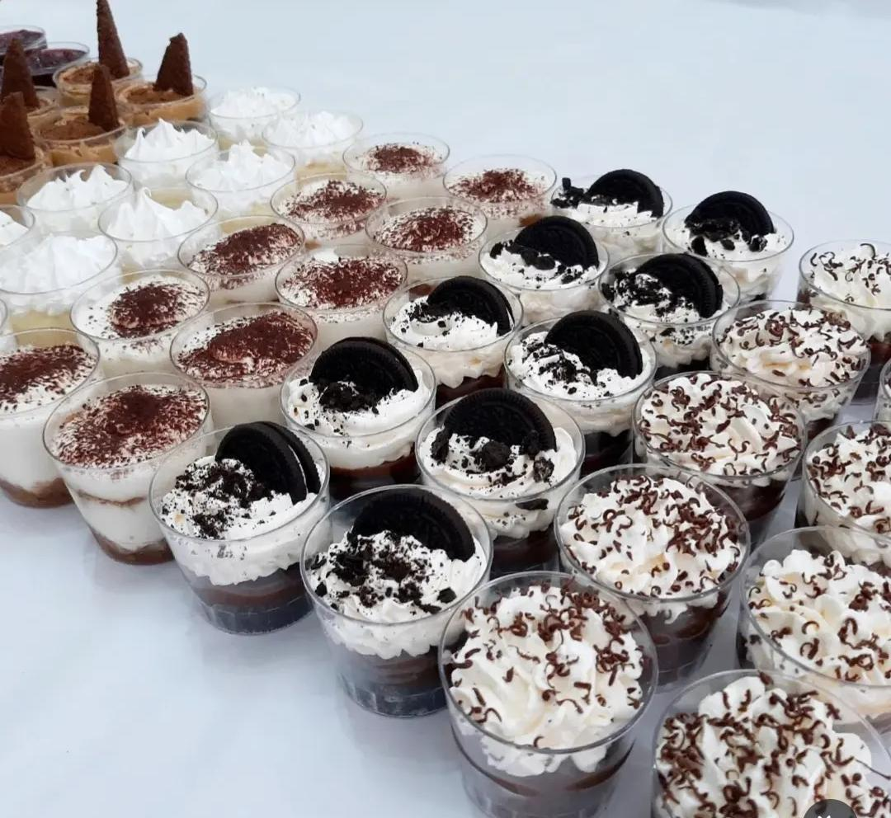
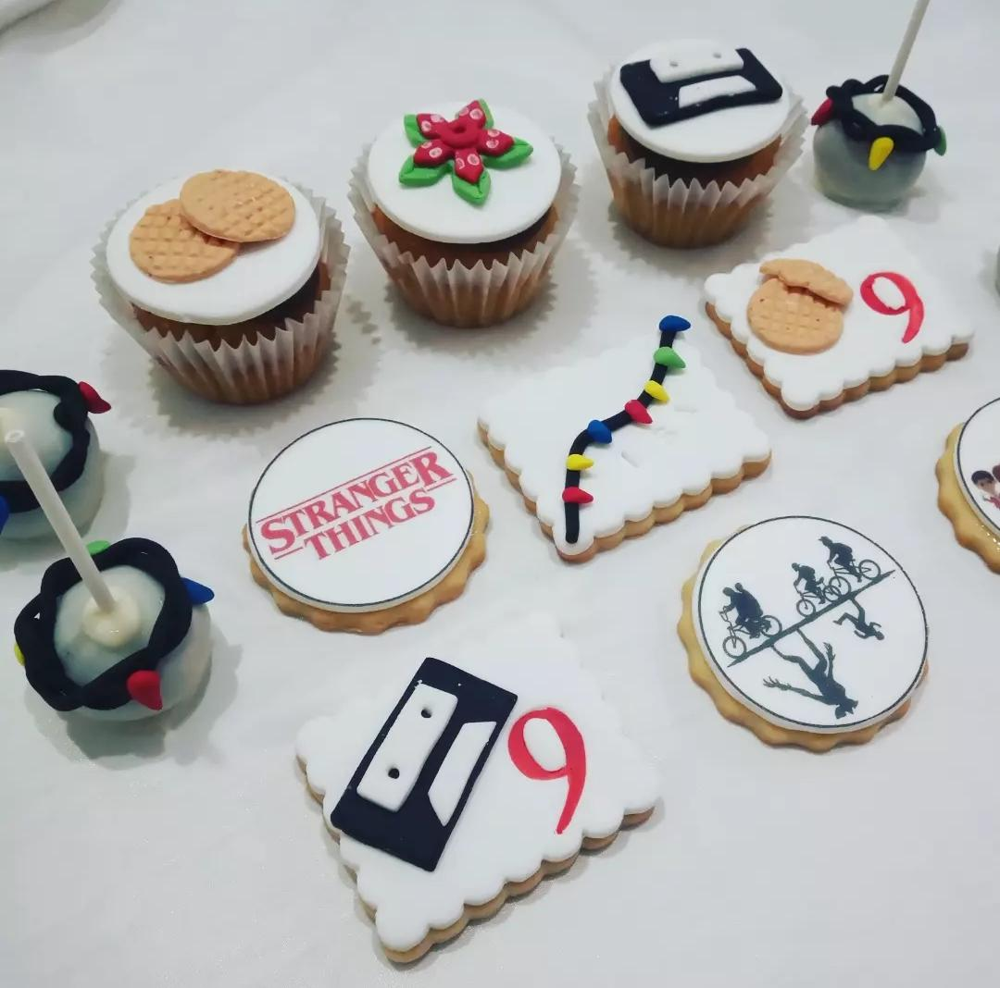

Encuentra tus postres favoritos
En Delicias Artesanales creamos dulces caseros con mucho amor. Cada torta, cookie y postre está pensado para convertir cualquier momento en algo especial. Porque creemos que los mejores recuerdos siempre vienen acompañados.
Productos

Tortas
Tortas personalizadas para todo tipo de eventos como xv, comuniones, casamientos, etc.

Huevos artesanales
Hechos con chocolate de excelente calidad, en sus tres sabores:Chocolate blanco, chococolate con leche y semiamargo. Tambien ofrecemos diferente medidas: N6, N9, N12, conejitos rellenos, mini huevitos rellenos, huevos de medio kilo y huevos de un kilo.

Lunch
Lunch para eventos de todo tipo (cumples, reuniones, comunión, etc). Empanaditas, pizzetas, canastitas, salchichitas, chips rellenos y más. Ofrecemos productos caseros, sin conservantes ni aditivos

CupCakes
Sabor chocolate o vainilla. Pueden ser simples o rellenos con dulce de leche. Decoradas con crema, o masa comestible

Masitas
Masitas secas, simples y Rellenas. También ofrecemos Alfajorcitos de chocolate y Alfajorcitos de maicena

Desayuno/Merienda
Ideal para sorprender, cumples, aniversarios y días especiales. Ofrecemos tarta individual (sabor a elección), Mini frola, budin, alfajorcitos, chips con jamón y queso.

Flores comestibles
Ideales para decorar la mesa o como souvenir. Estan hechas con gomitas masticables

Shots
Hay de: Chocotorta, brownie, lemon pie, tiramisu, cheescake y de oreo

Mesa dulce
Hay para elegir: Pasta frola (membrillo o batata), Pasta frola de dulce de leche y crema pastelera, Torta de ricota, Torta brownie, Tarta frutilla, Tarta frutal, Lemon pie, Cheescake, Toffi, Balcarce, Torta de chocolate, Chocotorta, Masas secas

Tortas saladas
Para los amantes de lo salado; torta salada, triples surtidos, jamón y queso/ jamón y tomate/ jamón y huevo/ jamón y lechuga, rinde 32 sándwich

Candy
Ofrecemos candy para lucir tus mesas. Cookies, cupcakes, popcake, icepop, Ideales para souvenir